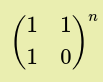
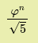

Fibonacci Numbers
Introduction:
Fibonacci sequence is a sequence of numbers starting with 0 and 1 and nth term of the sequence is sum of previous two terms
Fibonacci sequence : 0, 1, 1, 2, 3, 5, 8, 13, ....
generally \(n^{th}\) fibonacci term is denoted by \(F_n\) with $$F_n = F_{n-1} + F_{n-2}$$
Problem Statement:
print nth fibonacci Number
Algorithm 1 : Iterative Algorithm
1. Input is a number n .
2. Take F(0) = 0 nd F(1)=1 as base case
3. Use the formula F(n) = F(n-1)+F(n-2) to compute the n th fibonacci number
4. compute F(2), F(3), F(4), .... till F(n) saving two previous terms on every iteration
Pseudo code :
F(n):
if n == 1 :
return 1
else if n == 0 :
return 0
f0 = 0
f1 = 1
for i = 2 to n:
fn = f0 + f1
f0 = f1
f1 = fn
return fn
Code :
// nth fibonaci number
// naive
// complexity O(n)
#include <iostream>
using namespace std;
int fibo(int n)
{
if (n == 0)
{
return 0;
}
else if (n == 1)
{
return 1;
}
int f0 = 0; // first fibonacci number
int f1 = 1; // second fibonacci number
int fn;
for (int i = 2; i <= n; i++)
{
fn = f0 + f1;
f0 = f1;
f1 = fn;
}
return fn; // will have the final result
}
int main()
{
int n;
cout << "Enter n: ";
cin >> n;
cout << n << "th fiboncci number is " << fibo(n) << "\n";
}
Complexity Analysis :
Since the code has to go through a loop of n the time complexity is O(n)
Algorithm 2 : Recursive Algorithm
1. Here we recurse from F(n) to calculate F(n-1) and F(n-2).
2. Recursion will end with base case F(0) = 0 and F(1) = 0 .
Pseudo code :
F(n):
if n == 1 :
return 1
else if n == 0 :
return 0
return f(n-1)+f(n-2)
Code :
// nth fibonaci number
// recurrsive
// complexity O(2^n)
#include <iostream>
using namespace std;
int fibo(int n)
{
if (n == 0)
{
return 0;
}
else if (n == 1)
{
return 1;
}
return fibo(n - 1) + fibo(n - 2);
}
int main()
{
int n;
cout << "Enter n: ";
cin >> n;
cout << n << "th fiboncci number is " << fibo(n) << "\n";
}
Complexity Analysis :
T(n) = T(n-1) + T(n-2) + c where c is some constant
≈ 2*T(n-1) + c taking T(n-2) ≈ T(n-1)
Now,
T(n-1) ≈ 2*T(n-2) + c
⇒ T(n) = 2*(2*T(n-2)+c)+c
T(n) = 4T(n-2)+3c
= 8T(n-3)+7c
......
.......
.......
= 2kT(n-k)+(2k-1)*c
The recursion ends when k = n ...
T(n) = 2nT(0)+(2n-1)*c
≈ 2n+(2n)*c
≈ 2n(1+c)
≈ 2n
Hence Time complexity of Recursive approach is O(2n)
But the above one is not the best upper bound .
solving linear recursive equation \( T(n) = T(n-1) + T(n-2) \) we get
\( T(n) = O( φ^n ) \)
where \( φ = \frac{1+\sqrt{5}}{2} \) ( golden ratio ....)
Algorithm 3: matrix method
we use the following formula to get the nth fibonacci number
$$\begin{pmatrix} F_{n+1} & F_n\\ F_{n} & F_{n-1}\\\end{pmatrix} = \begin{pmatrix} 1 & 1 \\ 1 & 0 \\\end{pmatrix}^n$$
Pseudo code :
F(n):
if n == 0 :
return 0
else if n == 1 :
return 1
calculate m =

return m[0][1]
Code :
// nth fibonaci number
// using matrix multiplication
#include <iostream>
using namespace std;
// f1 f2 f3 f4 f5 f6 f7 f8 f9 f10 ......
// 0, 1, 1, 2, 3, 5, 8, 13, 21, 34, 55, .......
void multiplty(int a[2][2], int b[2][2])
{
int res[2][2];
res[0][0] = a[0][0] * b[0][0] + a[0][1] * b[1][0];
res[0][1] = a[0][0] * b[0][1] + a[0][1] * b[1][1];
res[1][0] = a[1][0] * b[0][0] + a[1][1] * b[1][0];
res[1][1] = a[1][0] * b[0][1] + a[1][1] * b[1][1];
a[0][0] = res[0][0];
a[0][1] = res[0][1];
a[1][0] = res[1][0];
a[1][1] = res[1][1];
}
int fibo(int n)
{
if (n == 0)
{
return 0;
}
else if (n == 1)
{
return 1;
}
int res[2][2] = {
{1, 1},
{1, 0}};
int f[2][2] = {
{1, 1},
{1, 0}};
for(int i=2;i<n;i++)
{
multiplty(res,f);
}
return res[0][1];
}
int main()
{
int n;
cout << "Enter n: ";
cin >> n;
cout << n << "th fiboncci number is " << fibo(n) << "\n";
}
Complexity Analysis :
Time complexity : \(O(M(n)n)\) where \(M(n)\) is complexity of multiplying two numbers and n is complexity of multiplying the matrix n times
complexity can be optimized to \(O(M(n)logn)\) by using binary exponentiation method. ( Try to write the code )
Algorithm 4: Direct formula method
we use the following formula to get the nth fibonacci number
$$ F(n) = \frac{φ^n}{\sqrt{5}}$$
Pseudo code :
F(n):
if n == 0 :
return 0
else if n == 1 :
return 1
return

Code :
// nth fibonacci number
// using formula
// f0 f1 f2 f3 f4 f5 f6 f7 f8 f9 f10 ......
// 0, 1, 1, 2, 3, 5, 8, 13, 21, 34, 55, .......
#include <iostream>
#include <cmath>
using namespace std;
int fibo(int n)
{
double phi = (1+sqrt(5))/2;
return round(pow(phi,n)/sqrt(5));
}
int main()
{
int n;
cout << "Enter n: ";
cin >> n;
cout << n << "th fiboncci number is " << fibo(n) << "\n";
}
Complexity Analysis :
Time complexity : \(O(n)\)
This can be optimised to \(O(logn)\) using binary exponentiation.
Anyway this is not generally used because φ is irrational since we take its approximate value 1.618... and some decimal places are lost during floating point multiplication